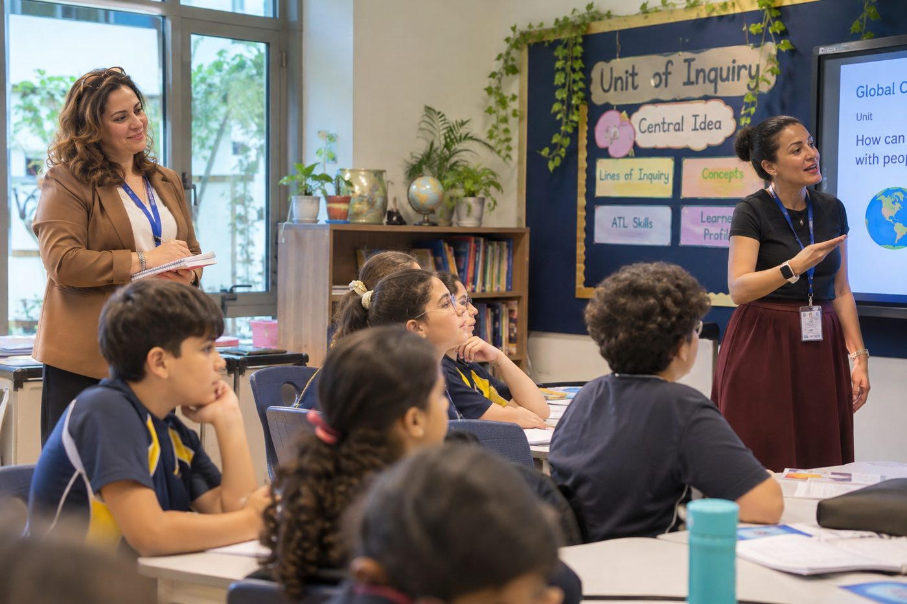

See teaching.لاحِظ التعليم.
Grow teachers.طوِّر المعلمين.
The lesson observation platform for UAE schools.منصة الملاحظة الصفية للمدارس في دولة الإمارات.
Learning walks, formal observations and appraisals in one place, aligned to the MOE inspection framework, with feedback sent to teachers in one tap.الجولات التعليمية والملاحظات الصفية الرسمية وتقييم الأداء في مكان واحد، وفق إطار الرقابة المدرسية في دولة الإمارات، مع إرسال التغذية الراجعة للمعلمين بنقرة واحدة.
Part of the ThinkNest familyجزء من عائلة ThinkNest

& reflectلاحِظ
وتأمّل
feedbackقدّم
التغذية الراجعة
growthادعم
النمو
From the classroom to growth, in three stepsمن الصف إلى النمو في ثلاث خطوات
Observeلاحِظ
Tap a level for each MOE indicator, tick ready-made feedback statements and take photos as evidence, all on your iPad or phone.اختر مستوى لكل مؤشر من مؤشرات الوزارة، وحدّد عبارات تغذية راجعة جاهزة، والتقط صورًا كأدلة، كل ذلك من جهاز iPad أو الهاتف.
Send feedbackأرسل التغذية الراجعة
One tap emails the teacher their feedback and the completed form. Teachers don’t need an account; they simply choose whether they’d like a meeting.بنقرة واحدة تصل التغذية الراجعة والنموذج المكتمل إلى بريد المعلم. لا يحتاج المعلم إلى حساب، بل يختار فقط إن كان يرغب في اجتماع.
See growthتابع النمو
Every walk, observation and appraisal builds each teacher’s record, with growth charts and recurring strengths and next steps.كل جولة وملاحظة وتقييم يُضاف إلى سجل المعلم، مع رسوم بيانية للنمو ونقاط القوة والخطوات التالية المتكررة.
Simple on an iPad, powerful for leadersبسيطة على iPad، وقوية للقادة
Judge each MOE indicator and tick ready-made feedback.احكم على كل مؤشر واختر تغذية راجعة جاهزة.
From Fatma via GrowNestمن فاطمة عبر GrowNest
Teachers reply in one tap, with no login.يرد المعلمون بنقرة واحدة دون تسجيل دخول.
Every observation builds each teacher’s growth record.كل ملاحظة تبني سجل نمو المعلم.
Everything school leaders need for quality assuranceكل ما يحتاجه قادة المدارس لضمان الجودة
Learning walksالجولات التعليمية
Short visits focused on chosen MOE indicators, marked seen, partly seen or not yet seen, with lesson stage and time.زيارات قصيرة تركّز على مؤشرات مختارة من إطار الوزارة، تُسجَّل كملاحَظ أو ملاحَظ جزئيًا أو لم يُلاحَظ بعد، مع مرحلة الحصة ومدة الزيارة.
Formal observationsالملاحظات الصفية الرسمية
All 12 lesson-observable MOE indicators on the six-point scale, with a bank of feedback statements for every level.جميع مؤشرات الوزارة الاثني عشر القابلة للملاحظة في الحصة على مقياس من ست درجات، مع بنك عبارات تغذية راجعة لكل مستوى.
Appraisalsتقييم الأداء
Termly or annual appraisals with ratings suggested from the year’s observation evidence and agreed targets.تقييمات فصلية أو سنوية مع تقديرات مقترحة من أدلة الملاحظات خلال العام، وأهداف متفق عليها.
Teacher recordsسجلات المعلمين
One page per teacher with a timeline, growth chart, indicator profile and a downloadable summary.صفحة لكل معلم تتضمن خطًا زمنيًا ورسمًا بيانيًا للنمو وملفًا للمؤشرات وملخصًا قابلًا للتنزيل.
Photo evidenceالأدلة المصوّرة
Take photos during the lesson, link each one to an indicator and keep it privately with the record.التقط الصور أثناء الحصة، واربط كل صورة بمؤشر، واحفظها بشكل خاص مع السجل.
Word formsنماذج Word
Professional observation and appraisal forms, ready to sign, file or attach.نماذج احترافية للملاحظة وتقييم الأداء، جاهزة للتوقيع والحفظ والإرفاق.
Meeting requestsطلبات الاجتماع
See at a glance which teachers asked to meet about their feedback, and mark meetings as done.اعرف بنظرة سريعة أيّ المعلمين طلبوا اجتماعًا لمناقشة التغذية الراجعة، وسجّل إتمام الاجتماعات.
Private by schoolخصوصية لكل مدرسة
Each school has its own secure space. Teachers and data are never shared between schools.لكل مدرسة مساحة آمنة خاصة بها، ولا تتم مشاركة المعلمين أو البيانات بين المدارس.
Aligned to the MOE inspection frameworkمتوافقة مع إطار الرقابة المدرسية
Every judgement uses the six-point MOE scale, and every indicator carries its framework reference, so your evidence is ready for self-evaluation and inspection.يستخدم كل حكم مقياس الوزارة ذا الدرجات الست، ويحمل كل مؤشر رقمه في الإطار، لتكون أدلتك جاهزة للتقييم الذاتي والرقابة.
Made for the people who lead learningصُممت لمن يقودون التعلم
Designed by educators, for educatorsصمّمها تربويون، للتربويين
GrowNest was created by the founders of ThinkNest, bringing together school leadership and communications experience across the UAE and beyond.أنشأت GrowNest مؤسِّسات ThinkNest، جامعاتٍ بين خبرة القيادة المدرسية والاتصال في الإمارات وخارجها.

Fatma Elzahraa Nabilفاطمة الزهراء نبيل
An experienced educator and school leader passionate about inquiry-based learning, student well-being and inclusive education.تربوية وقائدة مدرسية ذات خبرة، شغوفة بالتعلم القائم على الاستقصاء ورفاه الطلبة والتعليم الدامج.
Read full bioاقرأ السيرة كاملة
An experienced educator and school leader passionate about inquiry-based learning, student well-being, and inclusive education.
With over a decade of teaching experience and a strong foundation in educational leadership, I am committed to creating engaging, learner-centred environments where every child feels valued, supported, and inspired to reach their potential.
My leadership approach centres on collaboration, empowering educators, fostering curiosity, and developing compassionate, confident learners who are ready to make a positive difference in the world.
تربوية وقائدة مدرسية ذات خبرة، شغوفة بالتعلم القائم على الاستقصاء ورفاه الطلبة والتعليم الدامج.
بخبرة تزيد على عقد في التدريس وأساس متين في القيادة التربوية، ألتزم بتهيئة بيئات تعلم محفزة تتمحور حول المتعلم، يشعر فيها كل طفل بالتقدير والدعم والإلهام لبلوغ أقصى إمكاناته.
يرتكز أسلوبي القيادي على التعاون، وتمكين التربويين، وتنمية الفضول، وبناء متعلمين واثقين ومتعاطفين مستعدين لإحداث فرق إيجابي في العالم.

Mona Abushoushaمنى أبو شوشة
Over 16 years in education, from classroom teaching to Principal across two countries, with a PGCE from the University of Nottingham and the NPQH.أكثر من 16 عامًا في التعليم، من التدريس إلى إدارة المدرسة في بلدين، وحاصلة على PGCE من جامعة نوتنغهام ومؤهل NPQH.
Read full bioاقرأ السيرة كاملة
My passion for education led me from an Honours degree in Pharmaceutical Sciences into the classroom, where I discovered my true calling. Over the past 16 years, I have progressed from classroom teaching to leadership roles across two countries, ultimately achieving my goal of becoming a school Principal.
My commitment to professional growth is reflected in my PGCE from the University of Nottingham, Middle Leadership training with the British Council, and National Professional Qualification for Headship (NPQH) from the UK Department for Education.
Throughout my career, I have remained passionate about student-centred leadership, empowering teachers, building strong relationships with parents, and creating environments where every learner can thrive.
As Co-Founder of ThinkNest, I am excited to extend my impact beyond the school walls, supporting students, parents, and educators through a platform dedicated to meaningful learning, growth, and educational excellence.
قادني شغفي بالتعليم من درجة البكالوريوس مع مرتبة الشرف في العلوم الصيدلانية إلى الفصل الدراسي، حيث وجدت رسالتي الحقيقية. وعلى مدى 16 عامًا تدرّجت من التدريس إلى مناصب قيادية في بلدين، حتى حققت هدفي بأن أصبح مديرة مدرسة.
ويعكس التزامي بالنمو المهني حصولي على شهادة الدراسات العليا في التربية (PGCE) من جامعة نوتنغهام، وتدريب القيادة الوسطى من المجلس الثقافي البريطاني، والمؤهل المهني الوطني للقيادة المدرسية (NPQH) من وزارة التعليم في المملكة المتحدة.
وطوال مسيرتي بقيت شغوفة بالقيادة المتمحورة حول الطالب، وتمكين المعلمين، وبناء علاقات قوية مع أولياء الأمور، وتهيئة بيئات يزدهر فيها كل متعلم.
وبصفتي شريكة مؤسِّسة في ThinkNest، أتطلع إلى توسيع أثري خارج أسوار المدرسة، ودعم الطلبة وأولياء الأمور والتربويين من خلال منصة مكرّسة للتعلم الهادف والنمو والتميز التربوي.

Salma Faridسلمى فريد
A marketing and communications professional with over 10 years of experience across the UAE and Egypt, bringing together storytelling, brand development and community engagement.متخصصة في التسويق والاتصال بخبرة تزيد على 10 سنوات في الإمارات ومصر، تجمع بين سرد القصص وتطوير العلامات التجارية والتفاعل المجتمعي.
Read full bioاقرأ السيرة كاملة
Marketing & Communications | Brand Storytelling | Parent Relations & Community Engagement
I believe that great communication is more than just sharing a message, it is about creating connections, inspiring trust, and making people feel that they truly belong.
I am a passionate Marketing and Communications professional with over 10 years of diverse experience across the UAE and Egypt, bringing together creativity, strategic thinking, and a genuine love for people.
My professional journey has been driven by one simple belief: every interaction is an opportunity to make a difference, and every story deserves to be told in a way that leaves an impact.
With experience working across educational organisations and diverse professional environments, I combine my passion for storytelling, digital marketing, brand development, and community engagement to create meaningful experiences that go far beyond traditional communications. From developing compelling digital content and strengthening brand identity to leading large-scale events and building lasting relationships, I thrive on turning ideas into experiences that connect, inspire, and bring communities together.
التسويق والاتصال | سرد قصص العلامات التجارية | العلاقات مع أولياء الأمور والتفاعل المجتمعي
أؤمن بأن التواصل الفعّال أكثر من مجرد إيصال رسالة؛ إنه بناء للروابط، وكسب للثقة، وإشعار الناس بأنهم ينتمون حقًا.
أنا متخصصة شغوفة في التسويق والاتصال، بخبرة متنوعة تزيد على 10 سنوات في الإمارات ومصر، أجمع فيها بين الإبداع والتفكير الاستراتيجي وحب حقيقي للناس.
قادتني في مسيرتي المهنية قناعة بسيطة: كل تفاعل فرصة لإحداث فرق، وكل قصة تستحق أن تُروى بطريقة تترك أثرًا.
ومن خلال خبرتي في مؤسسات تعليمية وبيئات مهنية متنوعة، أجمع بين شغفي بسرد القصص والتسويق الرقمي وتطوير العلامات التجارية والتفاعل المجتمعي لصناعة تجارب هادفة تتجاوز الاتصال التقليدي. ومن تطوير المحتوى الرقمي المؤثر وتعزيز هوية العلامة إلى قيادة الفعاليات الكبرى وبناء علاقات دائمة، أستمتع بتحويل الأفكار إلى تجارب تجمع الناس وتلهمهم وتقرّب بين أفراد المجتمع.
See GrowNest in actionشاهد GrowNest عمليًا
A friendly 30-minute online walkthrough with one of our founders, at a time that suits you.جولة ودّية عبر الإنترنت مدتها 30 دقيقة مع إحدى المؤسِّسات، في الوقت الذي يناسبك.
- A live observation on the six-point MOE scale, with ready-made feedbackملاحظة صفية مباشرة على مقياس الوزارة ذي الدرجات الست، مع تغذية راجعة جاهزة
- Learning walks and how patterns build up across classesالجولات التعليمية وكيف تتكوّن الأنماط عبر الصفوف
- Teacher records and appraisals built from real evidenceسجلات المعلمين وتقييم الأداء المبنية على أدلة حقيقية
- SEF evidence generated from your observationsأدلة التقييم الذاتي المستخرجة من ملاحظاتك
- Your questions about setup, privacy and getting startedأسئلتك حول الإعداد والخصوصية والبدء
No commitment. We’ll reply within two working days.دون أي التزام. سنرد خلال يومي عمل.
Ready to see teaching more clearly?هل أنت مستعد لرؤية التعليم بوضوح أكبر؟
Register your school in a few minutes. Your observers can join with your school code.سجّل مدرستك خلال دقائق، ويمكن للملاحظين الانضمام باستخدام رمز المدرسة.